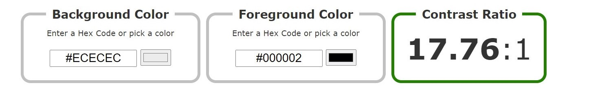

Web accessibility is very important as it makes the content on a website more user-friendly and easier to understand for all visitors, especially those with disabilities and limitations. We have therefore had this as our focus while creating the page.
We have kept our page simple, by using colors like black and white. The orange color that we have assigned to our nav bar, is inspired by the Oslomet webpage. We wanted to create a sense of connection between this first-year “blog” and the official university website. We have also used this to highlight our nav bar, making it easier to access and more convenient for the user.
We decided to use a light background with dark text to make the information stand out and be easy to read.  The contrast we have has a ratio of 17.76:1, which is way past the standard contrast ratio of 4.5:1 that all websites should have.
Another thing that we have put effort into is page structure content.
We have very clearly labeled the different regions of the page on the navbar, in a
logical and efficient way. “Home” “reflection essay” “Accessibility” and “Topical information”
and “fun page” are our five regions, and each region has a very clear heading. We have done this
to improve the navigation and orientation of the web page. We have furthermore also made the regions
change the background color and text color when you hover over them with a mouse.
This had been done to make it easier for the visitor to find the information it needs.
We have also created a “scroll to the top” button. This returns you to the top of the page when you have scrolled all the way down. The user can get back to the point of where they started, and also back to our five regions; if they wish to find some other information
Proin ut tempor quam. Mauris nisl mauris, molestie ut sodales non, tincidunt vel tortor. Aenean iaculis tellus justo, at pellentesque est fermentum at. Maecenas dignissim velit at leo sagittis maximus. Morbi in luctus nisl. Sed imperdiet finibus nunc, eu congue odio bibendum vel. Maecenas gravida nec erat at tristique.